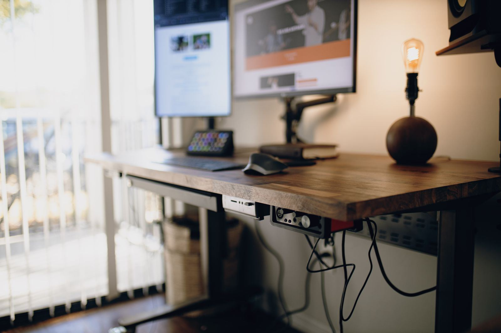

Home / Guides / Standing Desks

Best Electric Standing Desks (2026): Height Range, Load & Warranty Compared
Most standing desk listings lead with motors and colors. The number that decides whether a desk works for you is its height range: it has to go low enough to sit with relaxed shoulders and high enough to stand at elbow height. After that come load capacity, how the legs are built, and how long the frame and motor are covered. We compared three popular desks on those numbers, using manufacturer specs and published reviews, and worked out which heights each one actually fits.
Quick picks
| Product | Best for | |
|---|---|---|
| FlexiSpot E6 Bamboo | Best value dual-motor desk | Check price |
| Vari Classic Electric Standing Desk 60x30 | Complete desk, easy assembly, lifetime warranty | Check price |
| FlexiSpot EN1 | Lowest-cost electric desk for taller users | Check price |
How to choose
1. Height range: check both ends
Your sitting desk height should be close to your relaxed elbow height, and your standing height close to your standing elbow height. Use our calculator or desk height chart to get both numbers. Shorter people should check the desk's lowest height (many frames bottom out between about 24 and 29 in). Taller people should check the highest height, especially with a walking pad.
2. Frame height vs. desk height
Manufacturers often quote the frame's range without the desktop. Add your desktop's thickness (usually about 0.75–1.25 in) to get the real work-surface height. In this guide we add 1 in to frame-only figures.
3. Motors and leg stages
Dual motors lift both legs evenly and usually carry higher weight ratings. Three-stage legs extend further from a lower start point and keep more overlap between sections at full height, which generally helps with wobble.
4. Load capacity
Add up everything on the desk: monitors, monitor arms, a desktop PC, speakers. Leave plenty of headroom below the rating, especially if you lean on the desk while standing.
5. Warranty: frame vs. electronics
Warranties range from 5 years to lifetime, and they're often split: the steel frame is covered longer than the motor, controller and keypad. FlexiSpot's warranty, for example, only applies when you buy from an authorized seller, so check who the seller is on Amazon.
6. Expect some wobble at full height
Every standing desk sways a little at its tallest settings, and reviewers' observations vary with load and floor. Wider feet, crossbars and three-stage legs help. If you're tall and type hard, read the reviewer notes below.
Specs side by side
| Product | Height range | Load capacity | Motors / leg stages | Warranty | Price tier |
|---|---|---|---|---|---|
| FlexiSpot E6 Bamboo | 23.6–48.8 in (frame) | 220 lb | 2 motors / 3-stage | 5 years frame and motor, 2 years electronics | Mid-range |
| Vari Classic Electric Standing Desk 60x30 | 25–50.5 in (with top) | 200 lb | 2 motors (per Amazon listing) | Lifetime, non-transferable | Premium |
| FlexiSpot EN1 | 27.9–47.6 in (frame) | 154 lb (FlexiSpot) / 176 lb (Amazon listing) | Not stated by FlexiSpot | Check the listing | Budget |
From manufacturer pages and manuals; see the sources under each desk. Frame-only heights exclude the desktop. Specs can differ by region and configuration, so confirm the exact model on the listing.
Which desk fits your height
A desk has to go low enough for you to sit with relaxed shoulders and high enough to stand at elbow height. We compared each desk's range with the ideal heights from our desk height chart (regular shoes).
| Desk | Work surface range | Sitting: fits if you're | Standing: fits | With walking pad |
|---|---|---|---|---|
| FlexiSpot E6 Bamboo | 24.6″–49.8″ | 5'1" and taller | Up to 6'5" | Up to 6'1" |
| Vari Classic Electric Standing Desk 60x30 | 25.0″–50.5″ | 5'2" and taller | Up to 6'6" | Up to 6'3" |
| FlexiSpot EN1 | 28.9″–48.6″ | 6'0" and taller | Up to 6'3" | Up to 6'0" |
Work surface = frame range + 1 in desktop for the FlexiSpot desks; Vari's range already includes its top. If you're shorter than the sitting cutoff, the desk still works with a footrest; see our footrest guide.
The shortlist
Best value dual-motor desk
1. FlexiSpot E6 Bamboo
The E6 is the FlexiSpot desk Amazon shoppers in the US actually see most: dual motors, three-stage legs and a 220 lb rating, sold with bamboo or laminate tops. Its low starting height makes it a good fit for shorter users, and it adds anti-collision and memory presets. At full height it doesn't reach quite as high as the Vari, so very tall users with a walking pad should check the numbers below.
What we like
- Low starting height, good for shorter users
- Dual motors and three-stage legs
- Anti-collision and four memory presets
Trade-offs
- Shorter warranty than Vari
- Tops out lower than Vari for very tall users
What other reviewers found
- Windows Central: rated it a strong, straightforward electric desk and highlighted the anti-collision system that FlexiSpot's E5 lacked.
- GameRevolution: found it sturdier than expected at maximum height, while noting that two-leg desks are inherently more prone to wobble than four-leg designs.
Skip it if: You load the desk with more than about 150–180 lb of gear; leave headroom below the 220 lb rating.
Check FlexiSpot E6 Bamboo on Amazon →Spec sources (checked Nov 2, 2026): Amazon listing, FlexiSpot E6 manual
Complete desk, easy assembly, lifetime warranty
2. Vari Classic Electric Standing Desk 60x30
Vari sells this as a complete desk with a 1.25 in laminate top, dual motors, T-style legs and four memory presets. Its 25–50.5 in range covers most adults sitting and standing. The standout is the lifetime, non-transferable warranty, and reviewers consistently praise how quickly it goes together.
What we like
- Lifetime warranty
- Fast assembly with included tools
- Wide 60 × 30 in top included
Trade-offs
- Lower load rating (200 lb) than the E6
- Roughly twice the price of the E6
What other reviewers found
- TechRadar: put it together in minutes using the two included Allen wrenches.
- Review Geek: called it rock solid and very easy to assemble, but suggested skipping the wood-top option.
- PC Gamer: found it lifts and lowers effortlessly.
Skip it if: You run heavy multi-monitor setups near 200 lb, or want to reuse your own desktop.
Check Vari Classic Electric Standing Desk 60x30 on Amazon →Spec sources (checked Nov 2, 2026): Vari product page
Lowest-cost electric desk for taller users
3. FlexiSpot EN1
The EN1 is one of the best-selling budget standing desks on Amazon, and reviewers rate it good value for the money. Check the numbers before you buy, though: with a desktop its lowest height is about 28.9 in, roughly the height of a standard fixed desk. That means it only reaches a proper sitting height for people around 6 ft and taller; everyone else will need a footrest when sitting.
What we like
- Lowest price of the group
- One-piece desktop, no seam in the middle
- Fine for a laptop and one or two light monitors
Trade-offs
- Doesn't go lower than a standard desk
- Lowest load rating, and listings disagree on it
What other reviewers found
- Top Ten Reviews: called it a great-value standing desk, though assembly wasn't the easiest and the instructions could be clearer.
- TechRadar: recommends it as a budget desk for a steadier setup than most cheap models.
Skip it if: You're under about 6 ft and want to sit at the right height without a footrest.
Check FlexiSpot EN1 on Amazon →Spec sources (checked Nov 2, 2026): FlexiSpot EN1 product page
Why some popular desks aren't here
We only include desks whose key specs we could confirm and that are actually sold on Amazon US. That ruled out a few common recommendations:
- ErGear, FEZIBO and SHW: the same model showed different height ranges, load ratings and even motor counts from one listing to the next, with no official spec page to check.
- FlexiSpot E7 Pro, E5 and EC1: well reviewed elsewhere, but not currently listed on Amazon US, and older Amazon listings showed different specs from FlexiSpot's own pages.
- FlexiSpot E6 MAX: sold on Amazon with a higher load rating, but its height range and warranty differ between listings and we couldn't find an independent review.
Whatever desk you consider, check the height range including the desktop, the load rating and the warranty terms on the listing, and compare them with your numbers from the calculator.
FAQ
What height should my standing desk be?
Roughly your standing elbow height, so your forearms are level when you type. Our calculator estimates it from your height, including shoes and an optional walking pad.
Single or dual motor?
A single motor is fine for a laptop and one light monitor. For two monitors, monitor arms or anything heavy, a dual-motor frame lifts more smoothly and usually carries a higher weight rating.
How long should I stand each day?
There's no magic number. Most people do best switching between sitting and standing through the day rather than standing for hours at a time.
Why is the listed height range different from my desk height?
Many brands list the frame's range without the desktop. Add the desktop's thickness, usually about 0.75–1.25 in, to get the actual work-surface height.
Do all standing desks wobble?
Some sway at full height is normal for any desk. It's usually less with dual motors, three-stage legs, wider feet and lighter loads. If you're tall, check reviewers' notes on stability at maximum height.